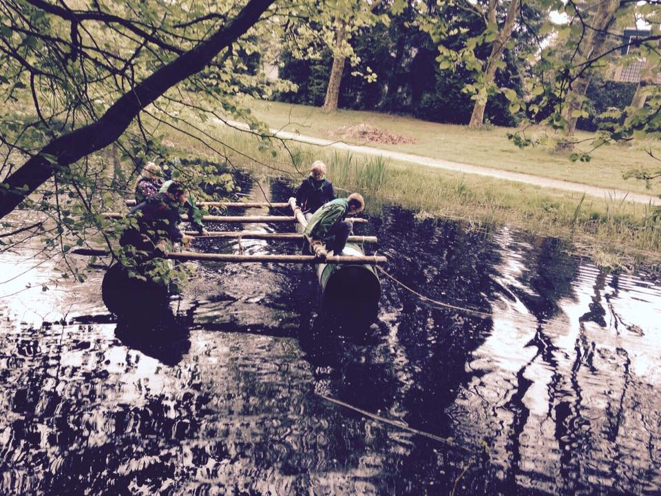

Eens een keer wat anders voor uw bedrijfsuitje of het verjaardagsfeestje van uw kinderen? Outdoor Leek organiseerd Laagdrempelige primitieve Outdoor activiteiten in noord Nederland. Ontdenk hoe goed uw team samen kan werken bij het knopen van jullie eigen vlot, kijk welk team een kattenpult maakt die het verste schiet. Of overwin hoogte vrees tijdens een touw parcours in de bomen.
Werner Veldman heeft meer als 10 jaar ervaring als leiding binnen de Scouting, klimt voor de hobby elke week in Bjoeks en heeft de nodige ervaring op het gebied van outdoor activiteiten.
 Outdoor leek heeft geen vaste programma's, maar bepaald graag met u samen de invulling van een leuke buitensport dag. Eens kijken wat we voor elkaar kunnen beteken?